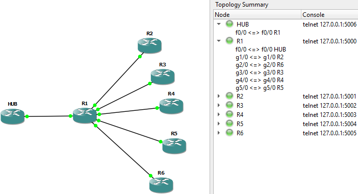

- June 13th 2019 -

DMVPN Config
OVERLAY = private/tunnel IP address
UNDERLAY = physical/NBMA address
HUB#
interface Tunnel0
ip address 10.0.0.1 255.255.255.0
no ip redirects
ip mtu 1400
ip nhrp map multicast dynamic
ip nhrp network-id 99
ip tcp adjust-mss 1360
tunnel source FastEthernet0/0
tunnel mode gre multipoint
tunnel key 99
end
R2#
tunnel 0
ip add 10.0.0.2 255.255.255.0
ip nhrp map multicast 198.51.99.7
ip nhrp map 10.0.0.7 198.51.99.7
ip nhrp network-id 99
ip nhrp nhs 10.0.0.7
tunne source fast 0/0
tunnel destin 198.51.99.7
tunnel key 99
end
==============================
Default Spoke Tunnel Config
==============================
ip nhrp map multicast 172.16.1.254
ip nhrp map 10.0.0.1 172.16.1.254
ip nhrp network-id 99
ip nhrp nhs 10.0.0.1
tunne source gig 1/0
tunnel destin 172.16.1.254
tunnel key 99
end
no int tun 0
==============================
Show Commands
==============================
HUB#show dmvpn
Legend: Attrb --> S - Static, D - Dynamic, I - Incomplete
N - NATed, L - Local, X - No Socket
# Ent --> Number of NHRP entries with same NBMA peer
NHS Status: E --> Expecting Replies, R --> Responding
UpDn Time --> Up or Down Time for a Tunnel
==========================================================================
Interface: Tunnel0, IPv4 NHRP Details
Type:Hub, NHRP Peers:4,
# Ent Peer NBMA Addr Peer Tunnel Add State UpDn Tm Attrb
----- --------------- --------------- ----- -------- -----
1 172.16.2.2 10.0.0.2 UP 00:04:41 D
1 172.16.3.3 10.0.0.3 UP 00:19:49 D
1 172.16.5.5 10.0.0.5 UP 00:03:56 D
1 172.16.6.6 10.0.0.6 UP 00:08:51 D
HUB#show ip nhrp
10.0.0.2/32 via 10.0.0.2
Tunnel0 created 00:05:17, expire 01:54:42
Type: dynamic, Flags: unique registered
NBMA address: 172.16.2.2
10.0.0.3/32 via 10.0.0.3
Tunnel0 created 00:20:24, expire 01:39:35
Type: dynamic, Flags: unique registered
NBMA address: 172.16.3.3
10.0.0.5/32 via 10.0.0.5
Tunnel0 created 00:04:31, expire 01:55:28
Type: dynamic, Flags: unique registered
NBMA address: 172.16.5.5
10.0.0.6/32 via 10.0.0.6
Tunnel0 created 00:09:27, expire 01:58:45
Type: dynamic, Flags: unique registered
NBMA address: 172.16.6.6
HUB#show ip eigrp interfaces
IP-EIGRP interfaces for process 100
Xmit Queue Mean Pacing Time Multicast Pending
Interface Peers Un/Reliable SRTT Un/Reliable Flow Timer Routes
Lo0 0 0/0 0 0/1 0 0
Fa0/0 1 0/0 332 0/1 1656 0
Tu0 4 0/0 110 6/454 120 0
HUB#
==============================
EIGRP Named Mode Quick Config
==============================
router eigrp CCIE
add ipv4 as 1
network 10.0.0.0 0.0.0.255
network 7.7.7.7